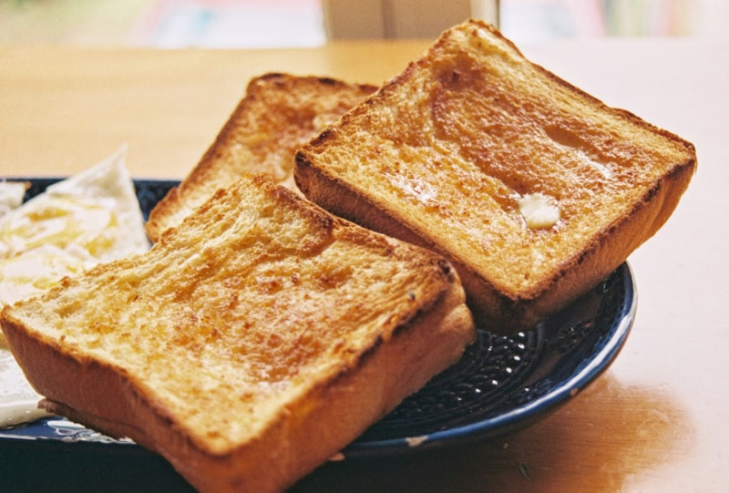
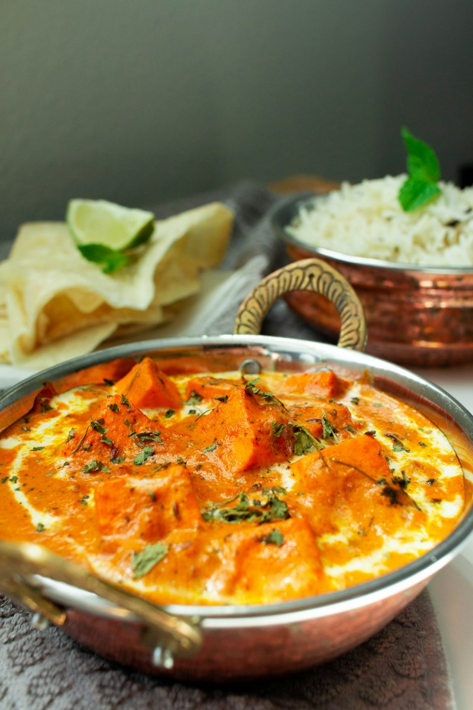
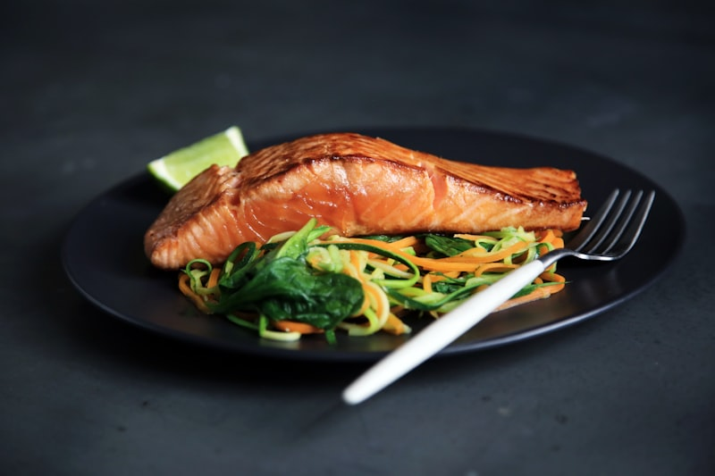
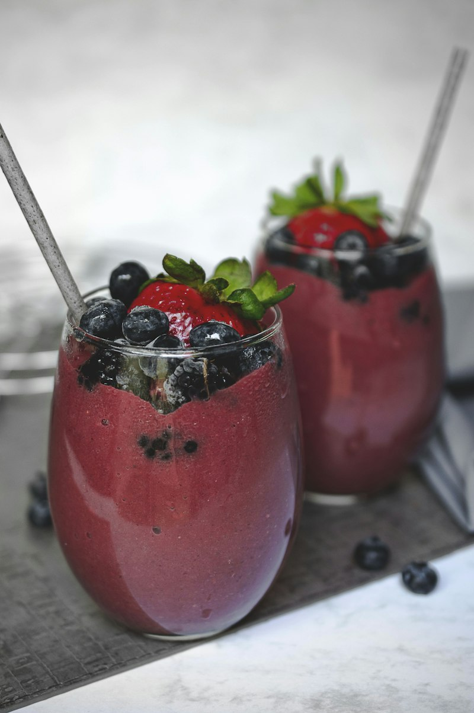
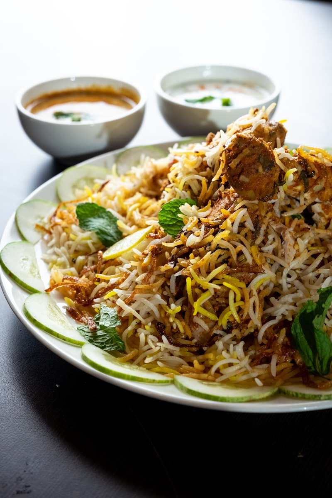
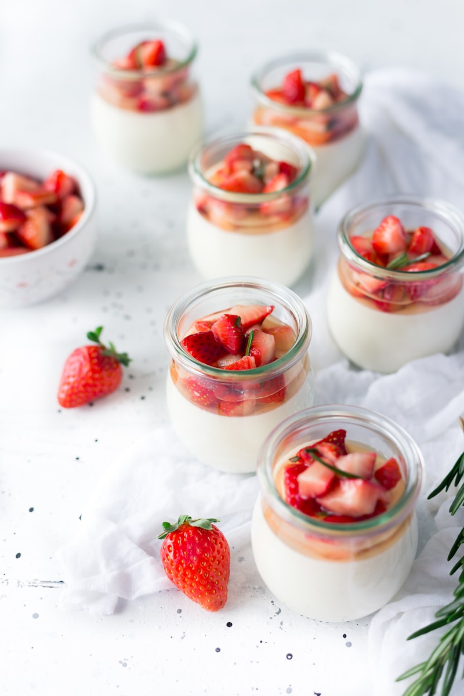
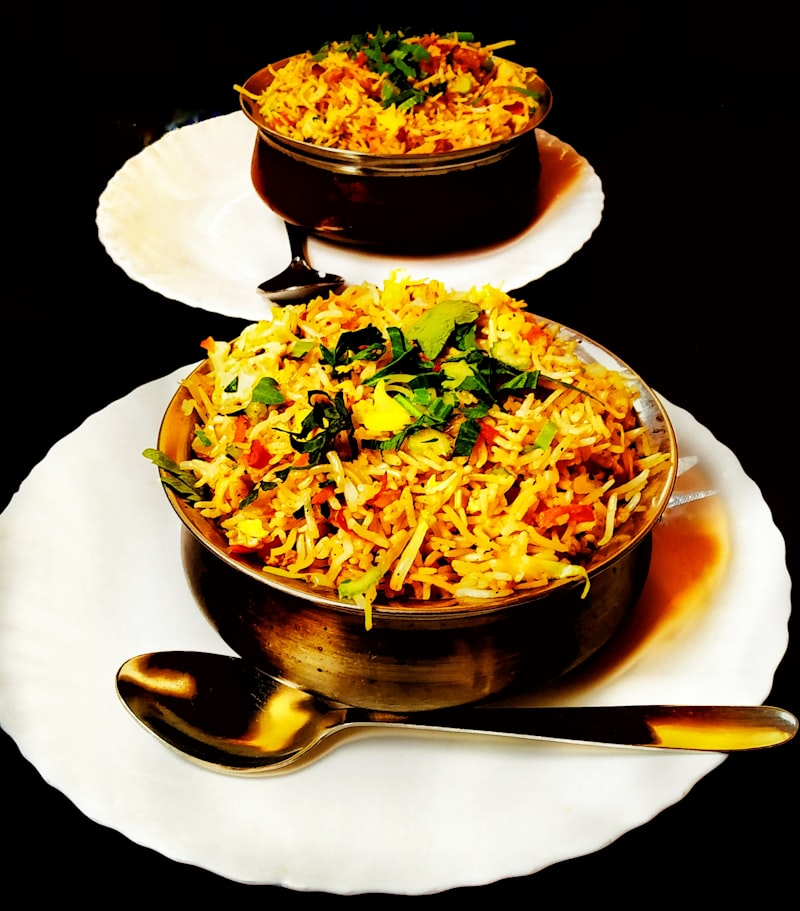
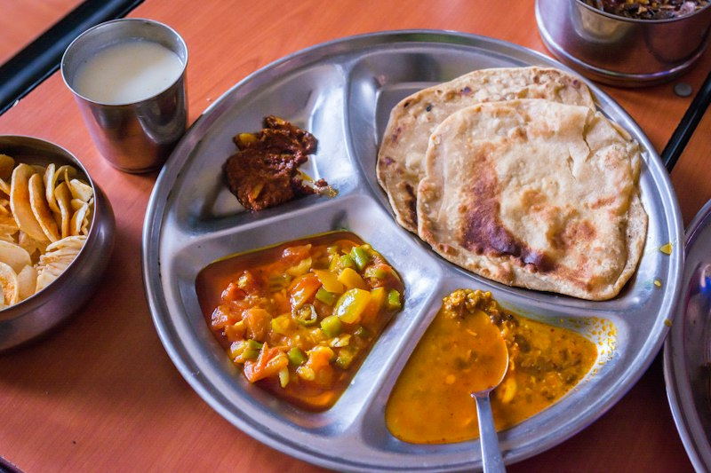

CHAPTER 06 • CULINARY BLUEPRINT
High-Protein Indian Household Recipes (Beginner Guide)
"The greatest obstacle in an Indian recomp is hidden cooking fats and under-dosed protein.
These 17 recipes power the 7-day meal plan, engineered specifically for beginners using basic cookware (tawa, kadhai, cooker, blender)."
⚠️ The 4 Beginner Rules for Indian Kitchen Success
- Always Measure Oil with a Teaspoon (5ml = 45 kcal): Never free-pour oil from the bottle. A free pour easily deposits 15–20ml (140–180 kcal) into your pan. Using a 5ml teaspoon or silicone oil brush keeps fat strictly within your daily macro allowance.
- The "2 Whole Eggs + 4 Whites" Rule: Whole eggs give you choline, fat-soluble vitamins, and great flavor. Adding 4 whites doubles the protein (+15g) with zero extra fat.
- Master the Soya Chunk Boil-and-Squeeze: Boil dry chunks in boiling water with 1/2 tsp salt for 5 minutes. Drain, rinse under cold tap water, and squeeze firmly with both hands until bone-dry. Now they will drink in spice gravy like sponge rather than taste like raw soy flour.
- Never High-Heat Overcook Chicken Breast: Chicken breast has zero fat. If you sear it on smoking high flame for 15 minutes, it turns into rubber. Cook 5 minutes on medium flame on one side, flip, cover with lid for 4 minutes on low flame—it will stay tender and juicy every time.

1. Desi Masala Egg Bhurji with Whole Wheat Phulkas
Spicy street-style scramble engineered for 42g bioavailable protein
🛒 Raw Ingredients
- Whole Farm Eggs 3 Large
- Egg Whites (separated) 3 Large (~90g)
- Whole Wheat Atta (Phulkas) 60g raw (makes 2 rotis)
- Red Onion (Finely chopped) 1 small (50g)
- Tomato (Finely chopped) 1 medium (60g)
- Green Chili & Ginger 1 green chili + 1/2 tsp ginger paste
- Desi Ghee or Mustard Oil 1 level tsp (5ml)
- Dry Spices (Haldi, Jeera, Pav Bhaji Masala, Salt) 1/2 tsp each
- Fresh Coriander Handful chopped
🍳 Step-by-Step Method (Beginner Steps)
1
Whisk Eggs: Crack 3 whole eggs into a bowl. Crack 3 more eggs, letting the whites drip into the bowl while dropping the yolks into a waste cup. Whisk with a fork and 1/4 tsp salt for 30 seconds until foamy.
2
Tadka (Medium Flame): Place a non-stick kadai or pan over medium flame. Add 1 tsp ghee/oil. Once warm (after 30 seconds), add 1/2 tsp jeera. It will sizzle immediately.
3
Sauté Aromatics (3 Mins): Add chopped onions, green chili, and ginger. Stir continuously with a spatula for 3 minutes until onions look translucent and light pink.
4
Cook Tomatoes (2 Mins): Add chopped tomatoes, 1/2 tsp haldi, 1/2 tsp red chili, and 1/2 tsp pav bhaji masala. Cook for 2 minutes, pressing tomatoes with spatula until soft and mushy.
5
Scramble (Low Flame, 2–3 Mins): Turn flame down to LOW. Pour in whisked eggs. Let sit untouched for 15 seconds, then fold gently from edges to center. Keep stirring gently until moist curds form. Turn off gas while eggs still look slightly glossy (they finish cooking in residual pan heat). Garnish with coriander. Serve with 2 dry phulkas.
💡 Beginner Pitfall: Do not cook eggs over high flame or stir violently like cement. High heat squeezes water out of egg proteins, making your bhurji rubbery and watery. Keep flame low and fold gently!

2. Tawa Grilled Kasuri Methi Chicken Tikka Bowl
Juicy tandoori-marinated chicken breast paired with fragrant jeera rice & kachumber
🛒 Raw Ingredients
- Boneless Chicken Breast 220g (cut into bite-sized cubes)
- Thick Curd / Dahi 50g (about 2 tablespoons)
- Ginger-Garlic Paste 1 level tbsp (15g)
- Kashmiri Red Chili Powder 1 tsp (gives vibrant red color without burning heat)
- Tandoori Masala / Garam Masala 1 tsp
- Kasuri Methi (Dried Fenugreek) 1 tsp (crushed between palms)
- Mustard Oil 1 tsp (5ml)
- Lemon Juice & Salt 1 tbsp lemon juice + 1/2 tsp salt
- Cooked Basmati Jeera Rice 160g (~55g raw rice cooked with cumin seeds)
- Kachumber Salad 150g (diced cucumber, tomato, onion with lemon)
🍳 Step-by-Step Method (Beginner Steps)
1
Quick Marinade: In a mixing bowl, combine curd, ginger-garlic paste, 1 tsp mustard oil, Kashmiri chili, tandoori masala, crushed kasuri methi, lemon juice, and salt. Mix with a spoon until smooth. Add chicken cubes and rub well. Let sit 10 minutes at room temperature (or prep the night before).
2
Preheat Tawa (Medium-High Flame): Put a non-stick tawa or flat frying pan on the stove over medium-high heat for 2 minutes until hot to the touch.
3
Sear First Side (5 Mins): Lay the marinated chicken pieces flat on the pan with space between them (do not pile them on top of each other). Let them sizzle undisturbed for 5 minutes until deep golden-brown char marks appear.
4
Flip & Cook Through (4–5 Mins, Medium Flame): Flip each piece with tongs. Lower flame slightly to medium. Cook for another 4 minutes. Poke the thickest piece with a fork—it should be white inside, tender, and juices should run clear.
5
Assemble: Plate the smoking tikka hot alongside 160g jeera rice and a large bowl of crisp kachumber salad dusted with chaat masala.
💡 Beginner Pitfall: Never crowd the pan. If you pile 220g chicken in a small pan, water pools up and boils the chicken instead of grilling it. Spread pieces out in a single layer.

3. High-Protein Masala Oats with Egg Whites & Veggies
Warm savory Indian oats packed with beta-glucan fiber and 40g lean protein
🛒 Raw Ingredients
- Rolled Oats (Plain, unflavored) 55g (~1 standard tea cup)
- Whole Egg 1 Whole Large
- Egg Whites (separated) 4 Large (~120g)
- Mixed Veggies (Capsicum, Onion, Peas) 80g (finely chopped)
- Mustard Oil or Ghee 1 tsp (5ml)
- Water 300ml (about 1.25 cups)
- Spices (Haldi, Garam Masala, Salt, Jeera) 1/2 tsp each + Maggi Magic Masala (optional 1/2 sachet)
- Lemon & Coriander Squeeze of 1/2 lemon + chopped coriander
🍳 Step-by-Step Method (Beginner Steps)
1
Sauté Veggies (Medium Flame, 2 Mins): Heat 1 tsp oil/ghee in a small saucepan. Add 1/2 tsp jeera, followed by chopped onions, capsicum, and peas. Sauté for 2 minutes until lightly softened.
2
Boil Oats (3 Mins): Add 55g rolled oats, 1/2 tsp haldi, 1/2 tsp salt, and 300ml water. Bring to a boil over medium flame, stirring occasionally for 3 minutes until thick and porridge-like.
3
Whisk In Egg Whites (Secret Muscle Trick): In a cup, whisk 1 whole egg + 4 egg whites. Turn flame to LOW. Slowly drizzle the whisked eggs into the simmering oats while continuously stirring with a spoon in one direction.
4
Finish (1 Min): Keep stirring for 60 seconds. The egg whites will cook seamlessly into the oats, creating an ultra-creamy, fluffy, high-protein savory porridge without any egg smell. Turn off flame, squeeze lemon juice, garnish with coriander, and eat immediately.
💡 Beginner Pitfall: Never pour eggs into boiling oats without stirring continuously. If you stop stirring, you will get big boiled egg clumps instead of creamy oats. Stir continuously like a whisk!
4. Palak Chicken Saag Bowl with Warm Phulkas
Nutrient-dense iron & antioxidant powerhouse packed with 54g chicken protein
🛒 Raw Ingredients
- Boneless Chicken Breast (Cubed) 220g raw weight
- Fresh Spinach (Palak) 200g (washed thoroughly)
- Onion & Tomato 1 medium onion + 1 medium tomato (finely chopped)
- Ginger-Garlic Paste 1 tbsp (15g)
- Mustard Oil or Ghee 1 level tsp (5ml)
- Spices (Garam Masala, Dhaniya Powder, Haldi, Salt) 1/2 tsp each
- Whole Wheat Phulkas 2 Phulkas (60g raw atta)
🍳 Step-by-Step Method (Beginner Steps)
1
Blanch & Puree Palak (3 Mins): Boil 2 cups of water in a pot. Drop in 200g washed spinach leaves for 2 minutes until wilted. Drain water, place leaves in a mixer grinder with 1 green chili, and pulse for 15 seconds into a smooth green puree.
2
Cook Base Gravy (Medium Flame, 4 Mins): Heat 1 tsp oil in a kadhai. Add 1/2 tsp jeera, followed by chopped onions and ginger-garlic paste. Sauté for 3 minutes until light brown. Add chopped tomato, haldi, dhaniya powder, and salt. Cook 2 minutes until tomatoes break down.
3
Sear Chicken (Medium Flame, 4 Mins): Add the 220g cubed chicken breast into the kadhai. Toss with the masala for 4 minutes until the chicken surfaces turn white.
4
Simmer in Puree (Low Flame, 5 Mins): Pour the green spinach puree into the kadhai. Add 1/4 cup water. Cover with a lid, lower flame, and simmer for 5 minutes until chicken is tender. Sprinkle 1/4 tsp garam masala on top. Serve hot with 2 dry phulkas.
💡 Beginner Pitfall: Do not boil spinach for 10 minutes—it turns dull military green and loses vitamin C. 2 minutes blanching preserves vibrant green color and fresh taste.

5. Kadhai Soya Chunks & Low-Fat Paneer Curry
Complete vegetarian protein powerhouse pairing soy isoflavones with milk casein
🛒 Raw Ingredients
- Dry Soya Chunks (Nutrela) 45g raw (yields ~140g rehydrated)
- Low-Fat Paneer (Amul / Mother Dairy) 100g (cut into small cubes)
- Diced Capsicum & Onion 1 small onion + 1/2 green bell pepper (cubed)
- Tomato Puree 2 medium tomatoes blended
- Ginger-Garlic Paste 1 tbsp (15g)
- Mustard Oil or Ghee 1 tsp (5ml)
- Kadhai Masala (Crushed Dhaniya seeds, Haldi, Red Chili, Salt) 1/2 tsp each
- Kasuri Methi 1/2 tsp crushed
🍳 Step-by-Step Method (Beginner Steps)
1
Boil & Squeeze Soya (5 Mins): Boil 500ml water with 1/2 tsp salt in a pot. Drop in 45g dry soya chunks. Boil for 5 minutes. Drain through a strainer, run cold water over them, and squeeze them very tightly with both hands until dry.
2
Tadka (Medium Flame, 3 Mins): Heat 1 tsp oil in a kadhai. Add ginger-garlic paste and diced onions. Sauté for 3 minutes until onions turn light golden.
3
Build Masala (2 Mins): Add tomato puree, haldi, red chili powder, crushed coriander seeds, and salt. Cook for 2 minutes until bubbles rise and gravy thickens.
4
Add Soya & Paneer (4 Mins): Toss in the squeezed soya chunks, 100g paneer cubes, and diced capsicum. Pour in 1/2 cup water. Cover with lid and simmer for 4 minutes so the soya chunks absorb the rich curry flavors. Finish with kasuri methi. Serve with 2 phulkas or 1 cup steamed rice.
💡 Beginner Pitfall: Never cook low-fat paneer for more than 4–5 minutes, or it turns hard and rubbery. Add it near the end so it remains soft and spongy.

6. Pan-Tawa Fish Fry with Mint Chutney & Salad
Crispy exterior, flaky interior, loaded with anti-inflammatory Omega-3 fatty acids
🛒 Raw Ingredients
- Fish Fillets (Surmai / Rohu / Tilapia / Basa) 220g boneless fillet
- Ginger-Garlic Paste 1 tsp (5g)
- Besan (Gram Flour) 1 tbsp (10g, creates a light crunchy crust)
- Mustard Oil 1.5 tsp (7.5ml)
- Spices (Kashmiri Chili, Ajwain, Haldi, Chaat Masala, Salt) 1/2 tsp each
- Lemon Juice 1 tbsp
- Mint-Coriander Chutney 2 tbsp (freshly ground)
- Cucumber & Onion Rings 150g with chaat masala
🍳 Step-by-Step Method (Beginner Steps)
1
Marinate (5 Mins): Pat the fish dry with a clean paper towel. In a small plate, mix besan, ginger-garlic paste, Kashmiri chili, haldi, ajwain (crushed between thumbs), lemon juice, and 1/2 tsp salt with 1 tsp water into a paste. Rub paste evenly on both sides of fish.
2
Heat Tawa (Medium Flame): Heat 1.5 tsp mustard oil on a non-stick tawa over medium flame until you see light smoke (this removes mustard oil pungent raw taste).
3
Sear First Side (4 Mins): Place the fish fillet gently on the tawa. Do not touch or move it for 4 minutes. A crisp golden-red crust will form.
4
Flip & Finish (3–4 Mins): Flip carefully with a flat spatula. Cook for another 3 to 4 minutes until fish flakes easily when pressed with a fork.
5
Serve: Plate with lemon wedges, onion rings, and mint-coriander chutney. Pair with 1 phulka or eat as a high-protein, low-carb dinner.
💡 Beginner Pitfall: Do not flip fish repeatedly! Fish is delicate and will break apart into flakes if moved too early. Let the first side cook completely before making one clean flip.

7. Rapid Anabolic Banana-Whey Post-Workout Smoothie
Immediate post-training glycogen refuel with 38g fast-digesting amino acids
🛒 Raw Ingredients
- Whey Protein Isolate (Chocolate / Vanilla / Kulfi) 1.25 Scoops (38g powder = 30g protein)
- Toned / Skim Milk (or Soy Milk) 250ml (~8g protein)
- Ripe Banana 1 Medium (110g)
- Cinnamon (Dalchini) Powder 1/4 tsp (boosts insulin sensitivity)
- Creatine Monohydrate 5g (1 level scoop)
- Ice Cubes 3–4 cubes
🍳 Step-by-Step Method (Beginner Steps)
1
Pour 250ml milk into blender jar FIRST (putting liquid first prevents whey powder from sticking to the bottom blades).
2
Add peeled sliced banana, 1.25 scoops whey isolate, 5g creatine, cinnamon powder, and ice cubes.
3
Blend on high for 30–45 seconds until thick and frothy. Drink within 45 minutes of finishing your gym workout.
💡 Beginner Pitfall: Always clean your shaker or blender cup with water immediately after drinking! Whey protein dries like glue inside shakers and will develop an intolerable smell if left unwashed.

8. Homestyle Tari Wali Chicken Curry (Quick Kadhai / Pressure Cooker)
Comforting Indian thin gravy chicken with 50g protein, paired with steamed rice
🛒 Raw Ingredients
- Chicken Breast (cut into medium curry pieces) 220g raw
- Red Onion (sliced thin) 1 large (80g)
- Tomatoes (pureed or finely chopped) 2 medium (120g)
- Ginger-Garlic Paste 1 tbsp (15g)
- Mustard Oil 1 level tsp (5ml)
- Spices (Haldi, Dhaniya Powder, Red Chili, Meat/Chicken Masala, Salt) 1/2 tsp each
- Water 1.5 cups (for thin tari gravy)
- Steamed Basmati Rice 170g cooked (~60g raw)
🍳 Step-by-Step Method (Beginner Steps)
1
Heat Oil (Medium Flame): In a cooker or kadhai, heat 1 tsp mustard oil. Add 1 bay leaf (tej patta) and 1/2 tsp jeera.
2
Brown Onions (4 Mins): Add sliced onions and ginger-garlic paste. Sauté over medium flame for 4 minutes until onions turn reddish-brown.
3
Bhuna Masala (2 Mins): Add pureed tomatoes, haldi, dhaniya powder, red chili powder, chicken masala, and 1/2 tsp salt. Cook for 2 minutes until moisture evaporates.
4
Add Chicken & Water (Pressure Cook 2 Whistles): Add chicken pieces and sauté for 2 minutes. Pour in 1.5 cups water. Close pressure cooker lid on medium flame. Cook for 2 whistles (about 5 minutes), then turn off gas and let steam release naturally. (If using kadhai, cover and simmer on low for 12 minutes).
5
Serve: Pour fragrant spiced tari chicken over 170g hot steamed rice. Garnish with fresh coriander.
💡 Beginner Pitfall: Do not open the pressure cooker immediately when you turn off the stove. Let the pressure pin drop on its own so the chicken stays tender and locks in its juices.

9. High-Protein Roasted Chana & Boiled Egg Whites Chaat
Quick zero-cooking evening office or rest day snack with 38g protein
🛒 Raw Ingredients
- Boiled Egg Whites (cubed) 6 Egg Whites (~180g = 22g protein)
- Roasted Bengal Gram (Bhuna Chana with skin) 50g (1 standard handful = 10g protein)
- Finely Chopped Onion & Tomato 1 small onion + 1 tomato
- Green Chili & Coriander 1 chili minced + fresh coriander
- Chaat Masala & Roasted Jeera Powder 1/2 tsp each
- Fresh Lemon Juice 1 whole lemon
- Black Salt (Kala Namak) 1/4 tsp
🍳 Step-by-Step Method (Beginner Steps)
1
Take 6 hard-boiled eggs (boiled for 10 minutes in water). Peel and discard yolks (or save 1 yolk if calories allow). Chop the egg whites into 1-inch bite-sized cubes.
2
In a bowl, add the chopped egg whites, 50g roasted chana, chopped onions, tomatoes, and green chili.
3
Sprinkle chaat masala, roasted jeera powder, black salt, and squeeze a full juicy lemon on top. Toss with a spoon for 10 seconds. Enjoy immediately with a cup of green tea or black coffee.
💡 Beginner Pitfall: Add the roasted chana right before eating. If you mix roasted chana into tomatoes and leave it in a dabba for 3 hours, the chana absorbs moisture and loses its signature crunch.

10. High-Protein Besan & Grated Paneer Cheela with Green Chutney
Savory Indian lentil crepes stuffed with low-fat paneer (42g protein)
🛒 Raw Ingredients
- Besan (Chickpea / Gram Flour) 60g
- Low-Fat Paneer (Grated) 120g
- Egg White (Optional binder) 2 egg whites (or 30ml water)
- Onion & Green Chili 1 small onion + 1 chili finely chopped
- Ajwain & Turmeric 1/4 tsp each
- Desi Ghee / Mustard Oil 1 tsp (5ml)
- Mint-Coriander Chutney 2 tbsp
🍳 Step-by-Step Method (Beginner Steps)
1
Cheela Batter: In a bowl, mix 60g besan, 2 egg whites (or water), 1/4 tsp ajwain, 1/4 tsp haldi, and 1/2 tsp salt. Add water gradually until you get a smooth, pourable pancake batter consistency (no dry lumps).
2
Heat Tawa (Medium Flame): Warm a non-stick tawa over medium flame. Brush with 1/2 tsp oil.
3
Pour & Spread: Pour half the batter in the center. Using the back of your ladle, spread in a circular spiral motion into a thin round cheela.
4
Stuff with Paneer: When the top surface sets and edges lift (after 2 minutes), sprinkle 60g grated low-fat paneer, chopped onions, and chilies evenly over the cheela. Fold into a half-moon wrap. Cook 1 more minute until crisp. Repeat for second cheela. Serve with green chutney.
💡 Beginner Pitfall: Make sure the tawa is warm, not smoking hot, when spreading the batter. If the pan is too hot, the batter sticks to your ladle instantly and won't spread thin.

11. Anabolic Kesar-Elaichi Dahi & Whey Shrikhand Bowl
Sweet craving dessert providing 42g slow-release casein + whey protein
🛒 Raw Ingredients
- Thick Hung Curd (Chakka) or Plain Greek Yogurt 200g
- Whey Protein Isolate (Vanilla / Kulfi / Mango) 1 Scoop (30g powder = 26g protein)
- Cardamom (Elaichi) Powder 1/4 tsp
- Saffron (Kesar) Strands 4 strands soaked in 1 tsp warm milk
- Sliced Almonds (Badam) 15g (~10–12 almonds)
- Pomegranate (Anar) Seeds 30g (for sweet crunch)
🍳 Step-by-Step Method (Beginner Steps)
1
Take 200g thick dahi or Greek yogurt in a bowl. (To make hung curd: pour regular dahi into a clean handkerchief/muslin cloth, tie it to your kitchen tap for 1 hour to let water drip away).
2
Add 1 scoop whey protein isolate, 1/4 tsp elaichi powder, and soaked kesar milk.
3
Vigorously beat with a spoon for 60 seconds until transformed into an ultra-thick, creamy dessert pudding.
4
Top with sliced badam and fresh pomegranate seeds. Chill in the freezer for 10 minutes before eating. The ultimate bedtime recovery treat.
💡 Beginner Pitfall: Use cold dahi straight from the fridge, never warm dahi. Cold curd emulsifies with whey powder smoothly without any grittiness.

12. High-Protein Rajma & Soya Chunks Pulao with Tadka Raita
One-pot spiced pulao combining kidney beans, soya chunks, and basmati rice
🛒 Raw Ingredients
- Boiled Rajma (Red Kidney Beans) 100g (cooked weight)
- Soya Chunks (boiled & squeezed) 40g dry weight (~120g hydrated)
- Basmati Rice 50g raw
- Onion & Tomato 1 small onion + 1 tomato (chopped)
- Ginger-Garlic Paste 1 tbsp
- Mustard Oil or Ghee 1 tsp (5ml)
- Biryani / Garam Masala & Salt 1 tsp each
- Low-Fat Curd (for Raita) 100g with cucumber and jeera
🍳 Step-by-Step Method (Beginner Steps)
1
Heat 1 tsp oil in a pressure cooker over medium flame. Add 1/2 tsp jeera, 1 bay leaf, and sliced onions. Sauté 3 minutes until onions turn golden.
2
Add chopped tomatoes, ginger-garlic paste, biryani masala, and 1 tsp salt. Cook for 2 minutes.
3
Add 40g pre-boiled and squeezed soya chunks, 100g boiled rajma, and 50g washed basmati rice. Stir gently for 1 minute so grains are coated in spice.
4
Add 1 cup (220ml) water. Close pressure cooker lid. Cook for 2 whistles on medium flame, then switch off gas. Once steam releases, fluff with a fork. Serve with 100g cucumber dahi raita.
💡 Beginner Pitfall: You can use canned boiled rajma or boil a 500g batch on Sunday to keep in the fridge for the entire week. Never put uncooked raw rajma in this quick pulao!

13. Instant Chilled Cold Coffee Whey Protein Shake
High-caffeine pre-workout stimulant and rapid muscle re-synthesizer (38g protein)
🛒 Raw Ingredients
- Whey Protein Isolate (Chocolate or Cafe Mocha) 1.25 Scoops (38g powder)
- Instant Coffee Powder (Nescafe / Bru) 1.5 tsp (dissolved in 2 tbsp warm water)
- Skim / Toned Milk 250ml
- Banana 1 small (90g)
- Creatine Monohydrate 5g
- Ice Cubes 4–5 cubes
🍳 Step-by-Step Method (Beginner Steps)
1
In a cup, mix 1.5 tsp coffee powder with 2 tbsp warm water until completely dissolved.
2
Pour 250ml chilled milk, the dissolved coffee, banana, whey isolate, creatine, and ice into a blender.
3
Blend on high for 30 seconds until rich and foamy like a Starbucks frappe. Drink 45 minutes prior to heavy evening lifting.
💡 Beginner Pitfall: Do not use boiling hot water with whey powder. High heat denatures the whey into unpleasant cottage cheese clumps. Use chilled milk and cold coffee solution.

14. Boiled Eggs & Spiced Bhuna Paneer Toast
Crispy multigrain toast topped with seared paneer cubes and boiled egg whites
🛒 Raw Ingredients
- Boiled Eggs 2 Whole + 3 Whites
- Low-Fat Paneer 80g (cut into small squares)
- Whole Wheat or Multigrain Bread 2 Slices
- Desi Ghee or Butter 1 tsp (5ml)
- Chaat Masala, Black Pepper & Salt 1/2 tsp each
- Raw Almonds 15g
🍳 Step-by-Step Method (Beginner Steps)
1
Heat 1 tsp ghee on a non-stick tawa over medium flame. Add paneer cubes, dust with pinch of turmeric, salt, and chaat masala. Sear for 2 minutes until light golden on both sides. Remove from pan.
2
On the same warm pan, toast 2 slices of multigrain bread for 1 minute per side until crisp and toasted.
3
Slice 2 whole boiled eggs and 3 egg whites into rounds. Layer spiced paneer and sliced eggs on the toasts. Sprinkle black pepper and chaat masala. Enjoy with 15g badam.
💡 Beginner Pitfall: How to boil eggs easily: Put eggs in cold tap water in a pot. Turn gas on high until it rolls to a boil. Then set a phone timer for 9 minutes. Transfer eggs immediately into cold tap water. The shell will peel off in one clean sheet!

15. Dhaba-Style Tari Wali Egg Curry (Quick & Easy)
Golden pricked eggs simmered in a spiced onion-tomato gravy with 48g protein
🛒 Raw Ingredients
- Boiled Eggs 2 Whole Eggs + 5 Egg Whites (boiled)
- Red Onion (finely chopped) 1 large (80g)
- Tomatoes (finely chopped or pureed) 2 medium (120g)
- Ginger-Garlic Paste 1 tbsp (15g)
- Mustard Oil 1 tsp (5ml)
- Spices (Haldi, Dhaniya Powder, Red Chili, Garam Masala, Salt) 1/2 tsp each
- Warm Water 1.5 cups
- Whole Wheat Phulkas 2 Phulkas (60g atta)
🍳 Step-by-Step Method (Beginner Steps)
1
Prick the peeled boiled eggs 3–4 times with a fork (this prevents eggs from bursting when heated and lets gravy penetrate).
2
Heat 1 tsp oil in a kadhai over medium flame. Drop the eggs in with a pinch of haldi and red chili. Sauté for 2 minutes until exterior turns blistered and golden. Remove eggs to a plate.
3
In the same pan, add 1/2 tsp jeera, chopped onions, and ginger-garlic paste. Cook for 3 minutes until reddish-brown.
4
Add tomatoes, haldi, dhaniya powder, red chili, and salt. Cook 2 minutes until oil specks appear on the edges. Add 1.5 cups water and bring to a boil.
5
Drop the golden eggs back into the boiling gravy. Lower flame, cover with lid, and simmer for 5 minutes. Garnish with coriander. Serve hot with 2 dry phulkas.
💡 Beginner Pitfall: Always prick the eggs with a fork before sautéing in oil. If you don't prick them, steam trapped inside can cause the egg to pop loudly in hot oil.

16. High-Protein Moong Dal & Low-Fat Paneer Khichdi
Soothing, gut-healing comfort meal with 48g complete protein for rest day recovery
🛒 Raw Ingredients
- Yellow Moong Dal (Split green gram washed) 50g raw
- White Rice (or Brown Rice) 30g raw
- Low-Fat Paneer 120g (cubed)
- Desi Ghee 1 level tsp (5ml)
- Spices (Jeera, Hing, Haldi, Salt) 1/2 tsp each (pinch of hing)
- Water 3 cups (for porridge-like khichdi)
- Low-Fat Curd (Dahi) 100g
🍳 Step-by-Step Method (Beginner Steps)
1
Wash 50g moong dal and 30g rice together in a bowl with water 2 times. Drain water.
2
Heat 1 tsp desi ghee in a pressure cooker over medium flame. Add 1/2 tsp jeera and a pinch of hing (asafoetida). They will sizzle in 10 seconds.
3
Add the washed dal, rice, 1/2 tsp haldi, and 1 tsp salt. Sauté in ghee for 30 seconds. Pour in 3 cups of water.
4
Close cooker lid. Cook on medium flame for 3 whistles (about 8 minutes). Turn off flame. Once steam releases, open lid and stir in 120g low-fat paneer cubes. The residual heat of the khichdi will gently warm the paneer without making it rubbery. Serve with 100g cool dahi.
💡 Beginner Pitfall: Traditional khichdi has very low protein because it is 70% rice. Here, we flip the ratio to 60% moong dal + 120g paneer cubes, transforming a sleepy meal into a 48g muscle builder.

17. Lemon Herb Pan-Seared Chicken Breast with Sautéed Bell Peppers
Zesty, peppery chicken seared to juicy perfection with colorful crunchy capsicums
🛒 Raw Ingredients
- Chicken Breast Fillet 220g (sliced horizontally into thin cutlets)
- Olive Oil or Mustard Oil 1 level tsp (5ml)
- Coarsely Crushed Black Pepper 1 tsp
- Fresh Lemon Juice & Zest Juice of 1 full lemon + pinch of zest
- Garlic (minced) 3 cloves (or 1 tsp paste)
- Oregano / Mixed Italian Herbs 1/2 tsp
- Bell Peppers (Green, Yellow, Red) & Onions 150g sliced into strips
- Warm Whole Wheat Phulka 1 Phulka (30g atta)
🍳 Step-by-Step Method (Beginner Steps)
1
Cutlet Technique: Place chicken breast flat on a cutting board. Slice horizontally through the middle like opening a book to make 2 thin steaks (this guarantees it cooks in 6 minutes without burning outside).
2
Rub chicken with 1/2 tsp salt, crushed black pepper, minced garlic, oregano, and lemon juice.
3
Heat 1 tsp oil in a non-stick pan over medium-high flame for 2 minutes. Lay chicken cutlets flat. Cook for 3.5 minutes on the first side without moving.
4
Flip chicken with tongs. Push chicken to one side of pan and drop the sliced bell peppers and onions onto the other side. Cook for 3 minutes, stirring veggies occasionally while chicken finishes cooking.
5
Squeeze extra lemon juice over pan and remove from heat. Serve hot with 1 warm phulka or enjoy as a low-carb rest-day dinner.
💡 Beginner Pitfall: Thick whole chicken breasts take 15+ minutes to cook in a pan, usually burning on the outside while raw in the middle. Always butterfly/slice thick breasts into two thinner cutlets for fast, juicy searing!